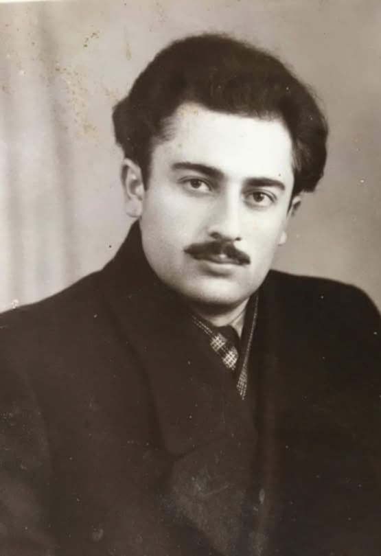
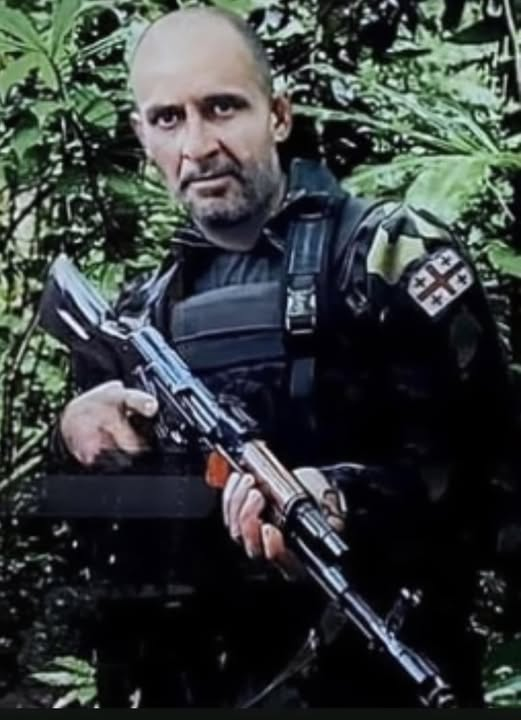

ლეილა არჩემაშვილი
ლეილა არჩემაშვილი _ საქართველოს ჟურნალისტთა შემოქმედებითი კავშირის წევრი 1999 წლიდან; საქართველოს ქალთა საბჭოს წევრი; ,,პერსონა 2023“ საქართველოს წარმატებული ადამიანები _ განთლების განვითარებისათვის; საქართველოს 2023 წლის ფოლკლორული ფესტივალის ლაურეატი; ორი ფოლკლორული კრებულის: ,,გომბორელი მოლექსეები" (1999 წ.) და ,,ლექსობენ მთიელები" (2011 წ.) ავტორ-შემდგენელი; ხუთი პოეტური კრებულის რედაქტორი: 1. დეკანოზი თავმას ჩოხელი ,,სიყვარულის მოძღვარი" 2018 წ. 2. დეკანოზი თავმას ჩოხელი ,,მამის იავნანა: ამღერებული ტკივილი" 2024 წ; 3. გიგლა ჭინჭარაული ,,ჩემი სამრეკლო“ 2016 წ. 4. მარიამ ჩოხელი ,,გაზაფხულს მოგიყვან ღიმილით" 2019 წ. 5. ნათელა გოხელაშვილი ,,ლექსები საფრანგეთზე" 2022 წ. წმინდა ილია მართლის გაზეთ ,,ივერიის" პრემიის 2020 წლის ლაურეატი, ნომინაცია ,,საუკეთესო ნოველები" და წმინდა ილია მართლის გაზეთ ,,ივერიის" პრემიის 2021 წლის ვერცხლის მედლის (მეორე ადგილი) კავალერი, ნომინაცია ,,პოეტური პროზა"

მარეხი დიდებაშვილი
"მასწავლებელთა აღიარების რეგიონულ კონკურსში " გამარჯვებული მენტორი მასწავლებელი მარეხი დიდებაშვილი

მინდია არაბული
მინდია არაბული 1994 წელს დაიბადა. 2012 წელს ამთავრებს სკოლას ვერცხლის მედალით, იმავე წელს 100% დაფინანსებით მოხვდა თავისუფალ უნივერსიტეტში იაპონური ენის და კულტურის ფაკულტეტზე, პარალელურად იღებს მონაწილეობას ლიტერატურულ კონკურსებში , (მერანი,პენმარათონი,შემოდგომის ლეგენდა, ლექსების გამოფენა და ა.შ , ,გამარჯვებულია მრავალჯერ. 2021 წელს გამომცემლობა დიოგენეს მიერ იბეჭდება მისი პირველი კრებული"ყოველი ამბის დასასრული" და ხდება "საბას" ფინალისტების სამეულში. დღეს არის ქოფირაიტერი, გადაცემების სცენარისტი, კლიპების სცენარისტი, "საქართველოს ევროპული ორბიტას" კრეატიული დირექტორი ,, ინსტაგრამის გვერდის "საუკუნის უკუნოს "ავტორია,

გიგლა ჭინჭარაული
გიგლა ჭინჭარაული _ დაამთავრა თბილისის სასულიერო სემინარია; 2016 წელს გამოსცა პირველი პოეტური კრებული ,,ჩემი სამრეკლო"; სულ მალე გამოვა გიგლა ჭინჭარაულის მეორე ვრცელი პოეტური კრებული; საქართველოს 2005 წლის ფოლკლორული ფესტივალის ლაურეატი; საქართველოს 2012 წლის ფოლკლორული ფესტივალის ლაურეატი. წმინდა ილია მართლის გაზეთ ,,ივერიის" პრემიის 2020 წლის ლაურეატი, ნომინაციაში ,,წლის საუკეთესო პოეზია"

მიხეილ (ძელო) ჭინჭარაული
მიხეილმა 1982 წელს დაამთავრა გომბორის საჯარო სკოლა. მსახიობობაზე ოცნებობდა და შოთა რუსთაველის თეატრალური ინსტიტუტის სტუდენტი გახდა. ომის დაწყების წელს დაამთავრა... თეატრი და სცენა სამომავლოდ გადადო. მიხეილმა ხელში იარაღი აიღო და სამშობლოს დამცველთა რიღებში ჩადგა. გზნებარე, ენერგიულ, ერთგულ, უღალატო მეგობრად თვლიდნენ მას თანამებრძოლები, მეგობრები, თანასოფლელები, ყველა, ვინც იცნობდა. მთის ლამაზ სოფელში დაბადებული ლომგულა ბიჭი სოხუმის მახლობლად დაეცა, როგორც გმირი. დიდი პატივით მიაბარეს მშობლიური სოფლის მიწას გულ დათუთქულებმა და ამავე დროს ამაყმა თანასოფლელებმა. მიხეილი სიკვლიდის შემდეგ დაჯილდოვდა ვახტანგ გორგასლის II ხარისხის ორდენით.

ბაქარი სულხანიშვილი
ბაქარიმ 1987 წელს დაამთავრა გომბორის საჯარო სკოლა და სწავლა გააგრძელა თბილისის ტოფოგრაფიის ტექნიკუმში. 1992 წლის მაისიდან ქართული სოფლების უსაფრთხოების დაცვას უზრუნველყოფდა მამაცი და უშიშარი ვაჟკაცი ბაქარი სულხანივილი. 9 ივნისს, გამთენიისა ოსებმა, არტილერია დაუშინეს ქვემო ნიქოზს. ჩვენები იძულებულები გახდნენ საპასუხო ცეცხლი გაეხსნათ. ამ შეტაკებისას "ბერდეუმის" მძღოლს და მსროლელს ბაქარ სულხანიშვილს მებრძოლებთან ერთად ეკავა პოზოცია. ბიჭები სამივე მხრიდან ალყაში მოექცნენ. ბაქარმა თანამებრძოლები აიძულა დაჭრილები გაეყვანათ თვითონ კი იცავდა. უკანასკნელ ამოსუნთქვამდე ებრძოდა მტერს. სანამ მისი საბრძოლო მანქანა არ ააფეთქეს. მარად ჭაბუკად დარჩენილი 21 წლის ბაქარი დიდი პატივით მიაბარეს მშობლიურ მიწას. მის ნათელ ხსოვნას დავიწყება არ უწერია.

ვალერიან ალბუთაშვილი
დამსახურებული ქართულის ფილილოგი და წიგნების ავტორი ვალერი დაიბადა 1933 წელს მთის ერთ პატარა და ლამაზ სოფელში, შემდგომ სკოლის წლები, ფიქრები მომავალზე... და საბოლოოდ არჩევანი მან პედაგოგიის პროფესიაზე შეაჩერა. 1973 წლიდან გომბორის საშუალო სკოლის დირექტორია. ასევე ხელმძღვანელობდა გომბორის სკოლასთან არსებულ სასკოლო ინტერნატს. მისი მოთხრობების პუბლიკაცია 1998 წელს დაიწყო საგანმანათლებლო-სალიტერატურო ჟურნალ "მოძღვარში".

ალუდა ზვიადაური
უკრაინაში დაღუპული ქართველი მებრძოლი, ალუდა ზვიადაური, რომელიც რუსეთის წინააღმდეგ იბრძოდა. ზვიადაური ბოლო ერთი წლის განმავლობაში ესტონეთში იმყოფებოდა სამუშაოდ, ომის დაწყების შემდეგ კი 6 მარტს უკრაინაში საბრძოლველად წავიდა. სხვადასხვა ფრონტზე იბრძოდა - წინახაზელების ზურგში იბრძოდა... დონბასში იბრძოდა, გამოჰყავდა უკრაინელი დაჭრილი მებრძოლი და მაგ დროს ზურგში მოხვდა ტყვია. როცა ნახეს გარდაცვლილი, დაჭრილი ხელში ეჭირა